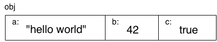

1. You Don't Know JS: Up & Going
2. Chapter 2: Into JavaScript
In the previous chapter, I introduced the basic building blocks of programming, such as variables, loops, conditionals, and functions. Of course, all the code shown has been in JavaScript. But in this chapter, we want to focus specifically on things you need to know about JavaScript to get up and going as a JS developer.
We will introduce quite a few concepts in this chapter that will not be fully explored until subsequent YDKJS books. You can think of this chapter as an overview of the topics covered in detail throughout the rest of this series.
Especially if you're new to JavaScript, you should expect to spend quite a bit of time reviewing the concepts and code examples here multiple times. Any good foundation is laid brick by brick, so don't expect that you'll immediately understand it all the first pass through.
Your journey to deeply learn JavaScript starts here.
Note: As I said in Chapter 1, you should definitely try all this code yourself as you read and work through this chapter. Be aware that some of the code here assumes capabilities introduced in the newest version of JavaScript at the time of this writing (commonly referred to as "ES6" for the 6th edition of ECMAScript -- the official name of the JS specification). If you happen to be using an older, pre-ES6 browser, the code may not work. A recent update of a modern browser (like Chrome, Firefox, or IE) should be used.
2.1. Values & Types
As we asserted in Chapter 1, JavaScript has typed values, not typed variables. The following built-in types are available:
stringnumberbooleannullandundefinedobjectsymbol(new to ES6)
JavaScript provides a typeof operator that can examine a value and tell you what type it is:
var a;
typeof a; // "undefined"
a = "hello world";
typeof a; // "string"
a = 42;
typeof a; // "number"
a = true;
typeof a; // "boolean"
a = null;
typeof a; // "object" -- weird, bug
a = undefined;
typeof a; // "undefined"
a = { b: "c" };
typeof a; // "object"
The return value from the typeof operator is always one of six (seven as of ES6! - the "symbol" type) string values. That is, typeof "abc" returns "string", not string.
Notice how in this snippet the a variable holds every different type of value, and that despite appearances, typeof a is not asking for the "type of a", but rather for the "type of the value currently in a." Only values have types in JavaScript; variables are just simple containers for those values.
typeof null is an interesting case, because it errantly returns "object", when you'd expect it to return "null".
Warning: This is a long-standing bug in JS, but one that is likely never going to be fixed. Too much code on the Web relies on the bug and thus fixing it would cause a lot more bugs!
Also, note a = undefined. We're explicitly setting a to the undefined value, but that is behaviorally no different from a variable that has no value set yet, like with the var a; line at the top of the snippet. A variable can get to this "undefined" value state in several different ways, including functions that return no values and usage of the void operator.
2.1.1. Objects
The object type refers to a compound value where you can set properties (named locations) that each hold their own values of any type. This is perhaps one of the most useful value types in all of JavaScript.
var obj = {
a: "hello world",
b: 42,
c: true
};
obj.a; // "hello world"
obj.b; // 42
obj.c; // true
obj["a"]; // "hello world"
obj["b"]; // 42
obj["c"]; // true
It may be helpful to think of this obj value visually:

Properties can either be accessed with dot notation (i.e., obj.a) or bracket notation (i.e., obj["a"]). Dot notation is shorter and generally easier to read, and is thus preferred when possible.
Bracket notation is useful if you have a property name that has special characters in it, like obj["hello world!"] -- such properties are often referred to as keys when accessed via bracket notation. The [ ] notation requires either a variable (explained next) or a string literal (which needs to be wrapped in " .. " or ' .. ').
Of course, bracket notation is also useful if you want to access a property/key but the name is stored in another variable, such as:
var obj = {
a: "hello world",
b: 42
};
var b = "a";
obj[b]; // "hello world"
obj["b"]; // 42
Note: For more information on JavaScript objects, see the this & Object Prototypes title of this series, specifically Chapter 3.
There are a couple of other value types that you will commonly interact with in JavaScript programs: array and function. But rather than being proper built-in types, these should be thought of more like subtypes -- specialized versions of the object type.
Arrays
An array is an object that holds values (of any type) not particularly in named properties/keys, but rather in numerically indexed positions. For example:
var arr = [
"hello world",
42,
true
];
arr[0]; // "hello world"
arr[1]; // 42
arr[2]; // true
arr.length; // 3
typeof arr; // "object"
Note: Languages that start counting at zero, like JS does, use 0 as the index of the first element in the array.
It may be helpful to think of arr visually:

Because arrays are special objects (as typeof implies), they can also have properties, including the automatically updated length property.
You theoretically could use an array as a normal object with your own named properties, or you could use an object but only give it numeric properties (0, 1, etc.) similar to an array. However, this would generally be considered improper usage of the respective types.
The best and most natural approach is to use arrays for numerically positioned values and use objects for named properties.
Functions
The other object subtype you'll use all over your JS programs is a function:
function foo() {
return 42;
}
foo.bar = "hello world";
typeof foo; // "function"
typeof foo(); // "number"
typeof foo.bar; // "string"
Again, functions are a subtype of objects -- typeof returns "function", which implies that a function is a main type -- and can thus have properties, but you typically will only use function object properties (like foo.bar) in limited cases.
Note: For more information on JS values and their types, see the first two chapters of the Types & Grammar title of this series.
2.1.2. Built-In Type Methods
The built-in types and subtypes we've just discussed have behaviors exposed as properties and methods that are quite powerful and useful.
For example:
var a = "hello world";
var b = 3.14159;
a.length; // 11
a.toUpperCase(); // "HELLO WORLD"
b.toFixed(4); // "3.1416"
The "how" behind being able to call a.toUpperCase() is more complicated than just that method existing on the value.
Briefly, there is a String (capital S) object wrapper form, typically called a "native," that pairs with the primitive string type; it's this object wrapper that defines the toUpperCase() method on its prototype.
When you use a primitive value like "hello world" as an object by referencing a property or method (e.g., a.toUpperCase() in the previous snippet), JS automatically "boxes" the value to its object wrapper counterpart (hidden under the covers).
A string value can be wrapped by a String object, a number can be wrapped by a Number object, and a boolean can be wrapped by a Boolean object. For the most part, you don't need to worry about or directly use these object wrapper forms of the values -- prefer the primitive value forms in practically all cases and JavaScript will take care of the rest for you.
Note: For more information on JS natives and "boxing," see Chapter 3 of the Types & Grammar title of this series. To better understand the prototype of an object, see Chapter 5 of the this & Object Prototypes title of this series.
2.1.3. Comparing Values
There are two main types of value comparison that you will need to make in your JS programs: equality and inequality. The result of any comparison is a strictly boolean value (true or false), regardless of what value types are compared.
Coercion
We talked briefly about coercion in Chapter 1, but let's revisit it here.
Coercion comes in two forms in JavaScript: explicit and implicit. Explicit coercion is simply that you can see obviously from the code that a conversion from one type to another will occur, whereas implicit coercion is when the type conversion can happen as more of a non-obvious side effect of some other operation.
You've probably heard sentiments like "coercion is evil" drawn from the fact that there are clearly places where coercion can produce some surprising results. Perhaps nothing evokes frustration from developers more than when the language surprises them.
Coercion is not evil, nor does it have to be surprising. In fact, the majority of cases you can construct with type coercion are quite sensible and understandable, and can even be used to improve the readability of your code. But we won't go much further into that debate -- Chapter 4 of the Types & Grammar title of this series covers all sides.
Here's an example of explicit coercion:
var a = "42";
var b = Number( a );
a; // "42"
b; // 42 -- the number!
And here's an example of implicit coercion:
var a = "42";
var b = a * 1; // "42" implicitly coerced to 42 here
a; // "42"
b; // 42 -- the number!
Truthy & Falsy
In Chapter 1, we briefly mentioned the "truthy" and "falsy" nature of values: when a non-boolean value is coerced to a boolean, does it become true or false, respectively?
The specific list of "falsy" values in JavaScript is as follows:
""(empty string)0,-0,NaN(invalidnumber)null,undefinedfalse
Any value that's not on this "falsy" list is "truthy." Here are some examples of those:
"hello"42true[ ],[ 1, "2", 3 ](arrays){ },{ a: 42 }(objects)function foo() { .. }(functions)
It's important to remember that a non-boolean value only follows this "truthy"/"falsy" coercion if it's actually coerced to a boolean. It's not all that difficult to confuse yourself with a situation that seems like it's coercing a value to a boolean when it's not.
Equality
There are four equality operators: ==, ===, !=, and !==. The ! forms are of course the symmetric "not equal" versions of their counterparts; non-equality should not be confused with inequality.
The difference between == and === is usually characterized that == checks for value equality and === checks for both value and type equality. However, this is inaccurate. The proper way to characterize them is that == checks for value equality with coercion allowed, and === checks for value equality without allowing coercion; === is often called "strict equality" for this reason.
Consider the implicit coercion that's allowed by the == loose-equality comparison and not allowed with the === strict-equality:
var a = "42";
var b = 42;
a == b; // true
a === b; // false
In the a == b comparison, JS notices that the types do not match, so it goes through an ordered series of steps to coerce one or both values to a different type until the types match, where then a simple value equality can be checked.
If you think about it, there's two possible ways a == b could give true via coercion. Either the comparison could end up as 42 == 42 or it could be "42" == "42". So which is it?
The answer: "42" becomes 42, to make the comparison 42 == 42. In such a simple example, it doesn't really seem to matter which way that process goes, as the end result is the same. There are more complex cases where it matters not just what the end result of the comparison is, but how you get there.
The a === b produces false, because the coercion is not allowed, so the simple value comparison obviously fails. Many developers feel that === is more predictable, so they advocate always using that form and staying away from ==. I think this view is very shortsighted. I believe == is a powerful tool that helps your program, if you take the time to learn how it works.
We're not going to cover all the nitty-gritty details of how the coercion in == comparisons works here. Much of it is pretty sensible, but there are some important corner cases to be careful of. You can read section 11.9.3 of the ES5 specification (http://www.ecma-international.org/ecma-262/5.1/) to see the exact rules, and you'll be surprised at just how straightforward this mechanism is, compared to all the negative hype surrounding it.
To boil down a whole lot of details to a few simple takeaways, and help you know whether to use == or === in various situations, here are my simple rules:
- If either value (aka side) in a comparison could be the
trueorfalsevalue, avoid==and use===. - If either value in a comparison could be one of these specific values (
0,"", or[]-- empty array), avoid==and use===. - In all other cases, you're safe to use
==. Not only is it safe, but in many cases it simplifies your code in a way that improves readability.
What these rules boil down to is requiring you to think critically about your code and about what kinds of values can come through variables that get compared for equality. If you can be certain about the values, and == is safe, use it! If you can't be certain about the values, use ===. It's that simple.
The != non-equality form pairs with ==, and the !== form pairs with ===. All the rules and observations we just discussed hold symmetrically for these non-equality comparisons.
You should take special note of the == and === comparison rules if you're comparing two non-primitive values, like objects (including function and array). Because those values are actually held by reference, both == and === comparisons will simply check whether the references match, not anything about the underlying values.
For example, arrays are by default coerced to strings by simply joining all the values with commas (,) in between. You might think that two arrays with the same contents would be == equal, but they're not:
var a = [1,2,3];
var b = [1,2,3];
var c = "1,2,3";
a == c; // true
b == c; // true
a == b; // false
Note: For more information about the == equality comparison rules, see the ES5 specification (section 11.9.3) and also consult Chapter 4 of the Types & Grammar title of this series; see Chapter 2 for more information about values versus references.
Inequality
The <, >, <=, and >= operators are used for inequality, referred to in the specification as "relational comparison." Typically they will be used with ordinally comparable values like numbers. It's easy to understand that 3 < 4.
But JavaScript string values can also be compared for inequality, using typical alphabetic rules ("bar" < "foo").
What about coercion? Similar rules as == comparison (though not exactly identical!) apply to the inequality operators. Notably, there are no "strict inequality" operators that would disallow coercion the same way === "strict equality" does.
Consider:
var a = 41;
var b = "42";
var c = "43";
a < b; // true
b < c; // true
What happens here? In section 11.8.5 of the ES5 specification, it says that if both values in the < comparison are strings, as it is with b < c, the comparison is made lexicographically (aka alphabetically like a dictionary). But if one or both is not a string, as it is with a < b, then both values are coerced to be numbers, and a typical numeric comparison occurs.
The biggest gotcha you may run into here with comparisons between potentially different value types -- remember, there are no "strict inequality" forms to use -- is when one of the values cannot be made into a valid number, such as:
var a = 42;
var b = "foo";
a < b; // false
a > b; // false
a == b; // false
Wait, how can all three of those comparisons be false? Because the b value is being coerced to the "invalid number value" NaN in the < and > comparisons, and the specification says that NaN is neither greater-than nor less-than any other value.
The == comparison fails for a different reason. a == b could fail if it's interpreted either as 42 == NaN or "42" == "foo" -- as we explained earlier, the former is the case.
Note: For more information about the inequality comparison rules, see section 11.8.5 of the ES5 specification and also consult Chapter 4 of the Types & Grammar title of this series.
2.2. Variables
In JavaScript, variable names (including function names) must be valid identifiers. The strict and complete rules for valid characters in identifiers are a little complex when you consider nontraditional characters such as Unicode. If you only consider typical ASCII alphanumeric characters though, the rules are simple.
An identifier must start with a-z, A-Z, $, or _. It can then contain any of those characters plus the numerals 0-9.
Generally, the same rules apply to a property name as to a variable identifier. However, certain words cannot be used as variables, but are OK as property names. These words are called "reserved words," and include the JS keywords (for, in, if, etc.) as well as null, true, and false.
Note: For more information about reserved words, see Appendix A of the Types & Grammar title of this series.
2.2.1. Function Scopes
You use the var keyword to declare a variable that will belong to the current function scope, or the global scope if at the top level outside of any function.
Hoisting
Wherever a var appears inside a scope, that declaration is taken to belong to the entire scope and accessible everywhere throughout.
Metaphorically, this behavior is called hoisting, when a var declaration is conceptually "moved" to the top of its enclosing scope. Technically, this process is more accurately explained by how code is compiled, but we can skip over those details for now.
Consider:
var a = 2;
foo(); // works because `foo()`
// declaration is "hoisted"
function foo() {
a = 3;
console.log( a ); // 3
var a; // declaration is "hoisted"
// to the top of `foo()`
}
console.log( a ); // 2
Warning: It's not common or a good idea to rely on variable hoisting to use a variable earlier in its scope than its var declaration appears; it can be quite confusing. It's much more common and accepted to use hoisted function declarations, as we do with the foo() call appearing before its formal declaration.
Nested Scopes
When you declare a variable, it is available anywhere in that scope, as well as any lower/inner scopes. For example:
function foo() {
var a = 1;
function bar() {
var b = 2;
function baz() {
var c = 3;
console.log( a, b, c ); // 1 2 3
}
baz();
console.log( a, b ); // 1 2
}
bar();
console.log( a ); // 1
}
foo();
Notice that c is not available inside of bar(), because it's declared only inside the inner baz() scope, and that b is not available to foo() for the same reason.
If you try to access a variable's value in a scope where it's not available, you'll get a ReferenceError thrown. If you try to set a variable that hasn't been declared, you'll either end up creating a variable in the top-level global scope (bad!) or getting an error, depending on "strict mode" (see "Strict Mode"). Let's take a look:
function foo() {
a = 1; // `a` not formally declared
}
foo();
a; // 1 -- oops, auto global variable :(
This is a very bad practice. Don't do it! Always formally declare your variables.
In addition to creating declarations for variables at the function level, ES6 lets you declare variables to belong to individual blocks (pairs of { .. }), using the let keyword. Besides some nuanced details, the scoping rules will behave roughly the same as we just saw with functions:
function foo() {
var a = 1;
if (a >= 1) {
let b = 2;
while (b < 5) {
let c = b * 2;
b++;
console.log( a + c );
}
}
}
foo();
// 5 7 9
Because of using let instead of var, b will belong only to the if statement and thus not to the whole foo() function's scope. Similarly, c belongs only to the while loop. Block scoping is very useful for managing your variable scopes in a more fine-grained fashion, which can make your code much easier to maintain over time.
Note: For more information about scope, see the Scope & Closures title of this series. See the ES6 & Beyond title of this series for more information about let block scoping.
2.3. Conditionals
In addition to the if statement we introduced briefly in Chapter 1, JavaScript provides a few other conditionals mechanisms that we should take a look at.
Sometimes you may find yourself writing a series of if..else..if statements like this:
if (a == 2) {
// do something
}
else if (a == 10) {
// do another thing
}
else if (a == 42) {
// do yet another thing
}
else {
// fallback to here
}
This structure works, but it's a little verbose because you need to specify the a test for each case. Here's another option, the switch statement:
switch (a) {
case 2:
// do something
break;
case 10:
// do another thing
break;
case 42:
// do yet another thing
break;
default:
// fallback to here
}
The break is important if you want only the statement(s) in one case to run. If you omit break from a case, and that case matches or runs, execution will continue with the next case's statements regardless of that case matching. This so called "fall through" is sometimes useful/desired:
switch (a) {
case 2:
case 10:
// some cool stuff
break;
case 42:
// other stuff
break;
default:
// fallback
}
Here, if a is either 2 or 10, it will execute the "some cool stuff" code statements.
Another form of conditional in JavaScript is the "conditional operator," often called the "ternary operator." It's like a more concise form of a single if..else statement, such as:
var a = 42;
var b = (a > 41) ? "hello" : "world";
// similar to:
// if (a > 41) {
// b = "hello";
// }
// else {
// b = "world";
// }
If the test expression (a > 41 here) evaluates as true, the first clause ("hello") results, otherwise the second clause ("world") results, and whatever the result is then gets assigned to b.
The conditional operator doesn't have to be used in an assignment, but that's definitely the most common usage.
Note: For more information about testing conditions and other patterns for switch and ? :, see the Types & Grammar title of this series.
2.4. Strict Mode
ES5 added a "strict mode" to the language, which tightens the rules for certain behaviors. Generally, these restrictions are seen as keeping the code to a safer and more appropriate set of guidelines. Also, adhering to strict mode makes your code generally more optimizable by the engine. Strict mode is a big win for code, and you should use it for all your programs.
You can opt in to strict mode for an individual function, or an entire file, depending on where you put the strict mode pragma:
function foo() {
"use strict";
// this code is strict mode
function bar() {
// this code is strict mode
}
}
// this code is not strict mode
Compare that to:
"use strict";
function foo() {
// this code is strict mode
function bar() {
// this code is strict mode
}
}
// this code is strict mode
One key difference (improvement!) with strict mode is disallowing the implicit auto-global variable declaration from omitting the var:
function foo() {
"use strict"; // turn on strict mode
a = 1; // `var` missing, ReferenceError
}
foo();
If you turn on strict mode in your code, and you get errors, or code starts behaving buggy, your temptation might be to avoid strict mode. But that instinct would be a bad idea to indulge. If strict mode causes issues in your program, almost certainly it's a sign that you have things in your program you should fix.
Not only will strict mode keep your code to a safer path, and not only will it make your code more optimizable, but it also represents the future direction of the language. It'd be easier on you to get used to strict mode now than to keep putting it off -- it'll only get harder to convert later!
Note: For more information about strict mode, see the Chapter 5 of the Types & Grammar title of this series.
2.5. Functions As Values
So far, we've discussed functions as the primary mechanism of scope in JavaScript. You recall typical function declaration syntax as follows:
function foo() {
// ..
}
Though it may not seem obvious from that syntax, foo is basically just a variable in the outer enclosing scope that's given a reference to the function being declared. That is, the function itself is a value, just like 42 or [1,2,3] would be.
This may sound like a strange concept at first, so take a moment to ponder it. Not only can you pass a value (argument) to a function, but a function itself can be a value that's assigned to variables, or passed to or returned from other functions.
As such, a function value should be thought of as an expression, much like any other value or expression.
Consider:
var foo = function() {
// ..
};
var x = function bar(){
// ..
};
The first function expression assigned to the foo variable is called anonymous because it has no name.
The second function expression is named (bar), even as a reference to it is also assigned to the x variable. Named function expressions are generally more preferable, though anonymous function expressions are still extremely common.
For more information, see the Scope & Closures title of this series.
2.5.1. Immediately Invoked Function Expressions (IIFEs)
In the previous snippet, neither of the function expressions are executed -- we could if we had included foo() or x(), for instance.
There's another way to execute a function expression, which is typically referred to as an immediately invoked function expression (IIFE):
(function IIFE(){
console.log( "Hello!" );
})();
// "Hello!"
The outer ( .. ) that surrounds the (function IIFE(){ .. }) function expression is just a nuance of JS grammar needed to prevent it from being treated as a normal function declaration.
The final () on the end of the expression -- the })(); line -- is what actually executes the function expression referenced immediately before it.
That may seem strange, but it's not as foreign as first glance. Consider the similarities between foo and IIFE here:
function foo() { .. }
// `foo` function reference expression,
// then `()` executes it
foo();
// `IIFE` function expression,
// then `()` executes it
(function IIFE(){ .. })();
As you can see, listing the (function IIFE(){ .. }) before its executing () is essentially the same as including foo before its executing (); in both cases, the function reference is executed with () immediately after it.
Because an IIFE is just a function, and functions create variable scope, using an IIFE in this fashion is often used to declare variables that won't affect the surrounding code outside the IIFE:
var a = 42;
(function IIFE(){
var a = 10;
console.log( a ); // 10
})();
console.log( a ); // 42
IIFEs can also have return values:
var x = (function IIFE(){
return 42;
})();
x; // 42
The 42 value gets returned from the IIFE-named function being executed, and is then assigned to x.
2.5.2. Closure
Closure is one of the most important, and often least understood, concepts in JavaScript. I won't cover it in deep detail here, and instead refer you to the Scope & Closures title of this series. But I want to say a few things about it so you understand the general concept. It will be one of the most important techniques in your JS skillset.
You can think of closure as a way to "remember" and continue to access a function's scope (its variables) even once the function has finished running.
Consider:
function makeAdder(x) {
// parameter `x` is an inner variable
// inner function `add()` uses `x`, so
// it has a "closure" over it
function add(y) {
return y + x;
};
return add;
}
The reference to the inner add(..) function that gets returned with each call to the outer makeAdder(..) is able to remember whatever x value was passed in to makeAdder(..). Now, let's use makeAdder(..):
// `plusOne` gets a reference to the inner `add(..)`
// function with closure over the `x` parameter of
// the outer `makeAdder(..)`
var plusOne = makeAdder( 1 );
// `plusTen` gets a reference to the inner `add(..)`
// function with closure over the `x` parameter of
// the outer `makeAdder(..)`
var plusTen = makeAdder( 10 );
plusOne( 3 ); // 4 <-- 1 + 3
plusOne( 41 ); // 42 <-- 1 + 41
plusTen( 13 ); // 23 <-- 10 + 13
More on how this code works:
- When we call
makeAdder(1), we get back a reference to its inneradd(..)that remembersxas1. We call this function referenceplusOne(..). - When we call
makeAdder(10), we get back another reference to its inneradd(..)that remembersxas10. We call this function referenceplusTen(..). - When we call
plusOne(3), it adds3(its innery) to the1(remembered byx), and we get4as the result. - When we call
plusTen(13), it adds13(its innery) to the10(remembered byx), and we get23as the result.
Don't worry if this seems strange and confusing at first -- it can be! It'll take lots of practice to understand it fully.
But trust me, once you do, it's one of the most powerful and useful techniques in all of programming. It's definitely worth the effort to let your brain simmer on closures for a bit. In the next section, we'll get a little more practice with closure.
Modules
The most common usage of closure in JavaScript is the module pattern. Modules let you define private implementation details (variables, functions) that are hidden from the outside world, as well as a public API that is accessible from the outside.
Consider:
function User(){
var username, password;
function doLogin(user,pw) {
username = user;
password = pw;
// do the rest of the login work
}
var publicAPI = {
login: doLogin
};
return publicAPI;
}
// create a `User` module instance
var fred = User();
fred.login( "fred", "12Battery34!" );
The User() function serves as an outer scope that holds the variables username and password, as well as the inner doLogin() function; these are all private inner details of this User module that cannot be accessed from the outside world.
Warning: We are not calling new User() here, on purpose, despite the fact that probably seems more common to most readers. User() is just a function, not a class to be instantiated, so it's just called normally. Using new would be inappropriate and actually waste resources.
Executing User() creates an instance of the User module -- a whole new scope is created, and thus a whole new copy of each of these inner variables/functions. We assign this instance to fred. If we run User() again, we'd get a new instance entirely separate from fred.
The inner doLogin() function has a closure over username and password, meaning it will retain its access to them even after the User() function finishes running.
publicAPI is an object with one property/method on it, login, which is a reference to the inner doLogin() function. When we return publicAPI from User(), it becomes the instance we call fred.
At this point, the outer User() function has finished executing. Normally, you'd think the inner variables like username and password have gone away. But here they have not, because there's a closure in the login() function keeping them alive.
That's why we can call fred.login(..) -- the same as calling the inner doLogin(..) -- and it can still access username and password inner variables.
There's a good chance that with just this brief glimpse at closure and the module pattern, some of it is still a bit confusing. That's OK! It takes some work to wrap your brain around it.
From here, go read the Scope & Closures title of this series for a much more in-depth exploration.
2.6. this Identifier
Another very commonly misunderstood concept in JavaScript is the this identifier. Again, there's a couple of chapters on it in the this & Object Prototypes title of this series, so here we'll just briefly introduce the concept.
While it may often seem that this is related to "object-oriented patterns," in JS this is a different mechanism.
If a function has a this reference inside it, that this reference usually points to an object. But which object it points to depends on how the function was called.
It's important to realize that this does not refer to the function itself, as is the most common misconception.
Here's a quick illustration:
function foo() {
console.log( this.bar );
}
var bar = "global";
var obj1 = {
bar: "obj1",
foo: foo
};
var obj2 = {
bar: "obj2"
};
// --------
foo(); // "global"
obj1.foo(); // "obj1"
foo.call( obj2 ); // "obj2"
new foo(); // undefined
There are four rules for how this gets set, and they're shown in those last four lines of that snippet.
foo()ends up settingthisto the global object in non-strict mode -- in strict mode,thiswould beundefinedand you'd get an error in accessing thebarproperty -- so"global"is the value found forthis.bar.obj1.foo()setsthisto theobj1object.foo.call(obj2)setsthisto theobj2object.new foo()setsthisto a brand new empty object.
Bottom line: to understand what this points to, you have to examine how the function in question was called. It will be one of those four ways just shown, and that will then answer what this is.
Note: For more information about this, see Chapters 1 and 2 of the this & Object Prototypes title of this series.
2.7. Prototypes
The prototype mechanism in JavaScript is quite complicated. We will only glance at it here. You will want to spend plenty of time reviewing Chapters 4-6 of the this & Object Prototypes title of this series for all the details.
When you reference a property on an object, if that property doesn't exist, JavaScript will automatically use that object's internal prototype reference to find another object to look for the property on. You could think of this almost as a fallback if the property is missing.
The internal prototype reference linkage from one object to its fallback happens at the time the object is created. The simplest way to illustrate it is with a built-in utility called Object.create(..).
Consider:
var foo = {
a: 42
};
// create `bar` and link it to `foo`
var bar = Object.create( foo );
bar.b = "hello world";
bar.b; // "hello world"
bar.a; // 42 <-- delegated to `foo`
It may help to visualize the foo and bar objects and their relationship:

The a property doesn't actually exist on the bar object, but because bar is prototype-linked to foo, JavaScript automatically falls back to looking for a on the foo object, where it's found.
This linkage may seem like a strange feature of the language. The most common way this feature is used -- and I would argue, abused -- is to try to emulate/fake a "class" mechanism with "inheritance."
But a more natural way of applying prototypes is a pattern called "behavior delegation," where you intentionally design your linked objects to be able to delegate from one to the other for parts of the needed behavior.
Note: For more information about prototypes and behavior delegation, see Chapters 4-6 of the this & Object Prototypes title of this series.
2.8. Old & New
Some of the JS features we've already covered, and certainly many of the features covered in the rest of this series, are newer additions and will not necessarily be available in older browsers. In fact, some of the newest features in the specification aren't even implemented in any stable browsers yet.
So, what do you do with the new stuff? Do you just have to wait around for years or decades for all the old browsers to fade into obscurity?
That's how many people think about the situation, but it's really not a healthy approach to JS.
There are two main techniques you can use to "bring" the newer JavaScript stuff to the older browsers: polyfilling and transpiling.
2.8.1. Polyfilling
The word "polyfill" is an invented term (by Remy Sharp) (https://remysharp.com/2010/10/08/what-is-a-polyfill) used to refer to taking the definition of a newer feature and producing a piece of code that's equivalent to the behavior, but is able to run in older JS environments.
For example, ES6 defines a utility called Number.isNaN(..) to provide an accurate non-buggy check for NaN values, deprecating the original isNaN(..) utility. But it's easy to polyfill that utility so that you can start using it in your code regardless of whether the end user is in an ES6 browser or not.
Consider:
if (!Number.isNaN) {
Number.isNaN = function isNaN(x) {
return x !== x;
};
}
The if statement guards against applying the polyfill definition in ES6 browsers where it will already exist. If it's not already present, we define Number.isNaN(..).
Note: The check we do here takes advantage of a quirk with NaN values, which is that they're the only value in the whole language that is not equal to itself. So the NaN value is the only one that would make x !== x be true.
Not all new features are fully polyfillable. Sometimes most of the behavior can be polyfilled, but there are still small deviations. You should be really, really careful in implementing a polyfill yourself, to make sure you are adhering to the specification as strictly as possible.
Or better yet, use an already vetted set of polyfills that you can trust, such as those provided by ES5-Shim (https://github.com/es-shims/es5-shim) and ES6-Shim (https://github.com/es-shims/es6-shim).
2.8.2. Transpiling
There's no way to polyfill new syntax that has been added to the language. The new syntax would throw an error in the old JS engine as unrecognized/invalid.
So the better option is to use a tool that converts your newer code into older code equivalents. This process is commonly called "transpiling," a term for transforming + compiling.
Essentially, your source code is authored in the new syntax form, but what you deploy to the browser is the transpiled code in old syntax form. You typically insert the transpiler into your build process, similar to your code linter or your minifier.
You might wonder why you'd go to the trouble to write new syntax only to have it transpiled away to older code -- why not just write the older code directly?
There are several important reasons you should care about transpiling:
- The new syntax added to the language is designed to make your code more readable and maintainable. The older equivalents are often much more convoluted. You should prefer writing newer and cleaner syntax, not only for yourself but for all other members of the development team.
- If you transpile only for older browsers, but serve the new syntax to the newest browsers, you get to take advantage of browser performance optimizations with the new syntax. This also lets browser makers have more real-world code to test their implementations and optimizations on.
- Using the new syntax earlier allows it to be tested more robustly in the real world, which provides earlier feedback to the JavaScript committee (TC39). If issues are found early enough, they can be changed/fixed before those language design mistakes become permanent.
Here's a quick example of transpiling. ES6 adds a feature called "default parameter values." It looks like this:
function foo(a = 2) {
console.log( a );
}
foo(); // 2
foo( 42 ); // 42
Simple, right? Helpful, too! But it's new syntax that's invalid in pre-ES6 engines. So what will a transpiler do with that code to make it run in older environments?
function foo() {
var a = arguments[0] !== (void 0) ? arguments[0] : 2;
console.log( a );
}
As you can see, it checks to see if the arguments[0] value is void 0 (aka undefined), and if so provides the 2 default value; otherwise, it assigns whatever was passed.
In addition to being able to now use the nicer syntax even in older browsers, looking at the transpiled code actually explains the intended behavior more clearly.
You may not have realized just from looking at the ES6 version that undefined is the only value that can't get explicitly passed in for a default-value parameter, but the transpiled code makes that much more clear.
The last important detail to emphasize about transpilers is that they should now be thought of as a standard part of the JS development ecosystem and process. JS is going to continue to evolve, much more quickly than before, so every few months new syntax and new features will be added.
If you use a transpiler by default, you'll always be able to make that switch to newer syntax whenever you find it useful, rather than always waiting for years for today's browsers to phase out.
There are quite a few great transpilers for you to choose from. Here are some good options at the time of this writing:
- Babel (https://babeljs.io) (formerly 6to5): Transpiles ES6+ into ES5
- Traceur (https://github.com/google/traceur-compiler): Transpiles ES6, ES7, and beyond into ES5
2.9. Non-JavaScript
So far, the only things we've covered are in the JS language itself. The reality is that most JS is written to run in and interact with environments like browsers. A good chunk of the stuff that you write in your code is, strictly speaking, not directly controlled by JavaScript. That probably sounds a little strange.
The most common non-JavaScript JavaScript you'll encounter is the DOM API. For example:
var el = document.getElementById( "foo" );
The document variable exists as a global variable when your code is running in a browser. It's not provided by the JS engine, nor is it particularly controlled by the JavaScript specification. It takes the form of something that looks an awful lot like a normal JS object, but it's not really exactly that. It's a special object, often called a "host object."
Moreover, the getElementById(..) method on document looks like a normal JS function, but it's just a thinly exposed interface to a built-in method provided by the DOM from your browser. In some (newer-generation) browsers, this layer may also be in JS, but traditionally the DOM and its behavior is implemented in something more like C/C++.
Another example is with input/output (I/O).
Everyone's favorite alert(..) pops up a message box in the user's browser window. alert(..) is provided to your JS program by the browser, not by the JS engine itself. The call you make sends the message to the browser internals and it handles drawing and displaying the message box.
The same goes with console.log(..); your browser provides such mechanisms and hooks them up to the developer tools.
This book, and this whole series, focuses on JavaScript the language. That's why you don't see any substantial coverage of these non-JavaScript JavaScript mechanisms. Nevertheless, you need to be aware of them, as they'll be in every JS program you write!
2.10. Review
The first step to learning JavaScript's flavor of programming is to get a basic understanding of its core mechanisms like values, types, function closures, this, and prototypes.
Of course, each of these topics deserves much greater coverage than you've seen here, but that's why they have chapters and books dedicated to them throughout the rest of this series. After you feel pretty comfortable with the concepts and code samples in this chapter, the rest of the series awaits you to really dig in and get to know the language deeply.
The final chapter of this book will briefly summarize each of the other titles in the series and the other concepts they cover besides what we've already explored.